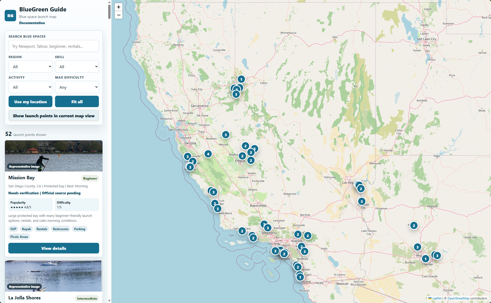
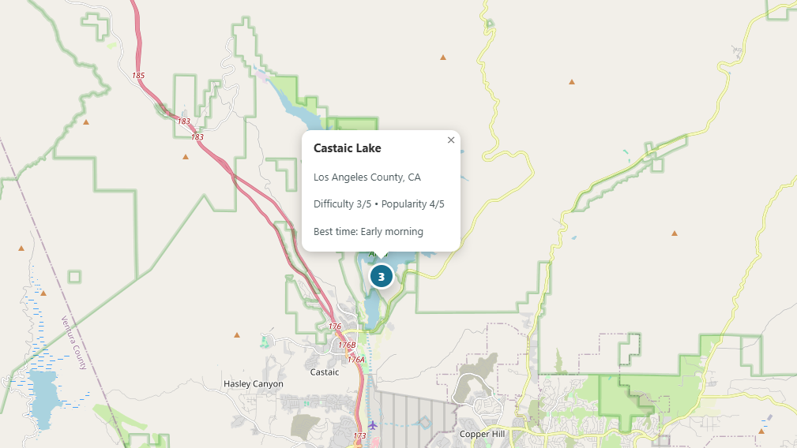
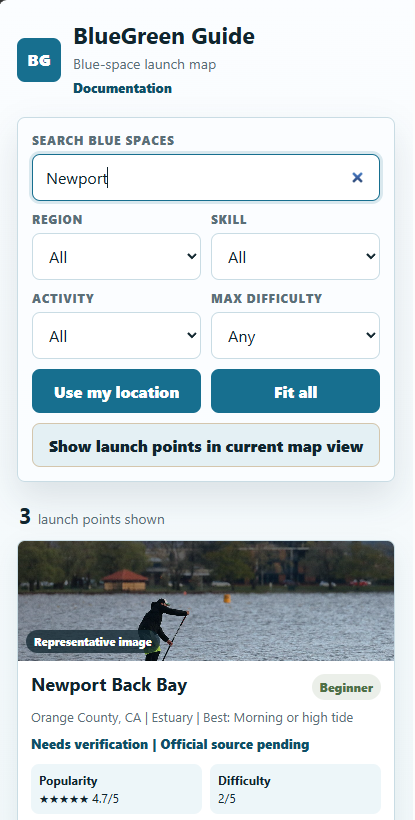
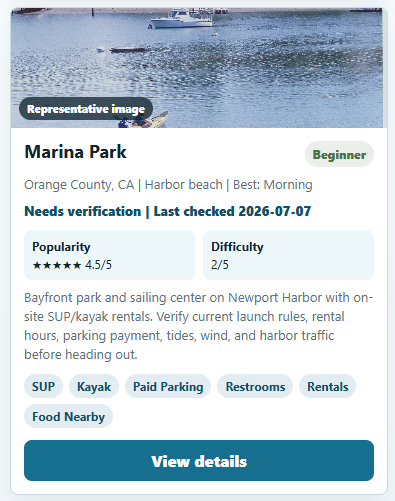
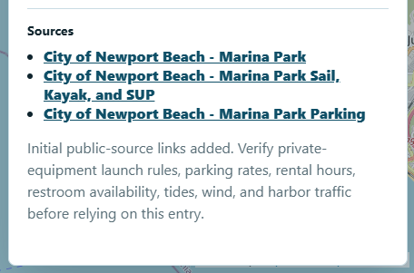
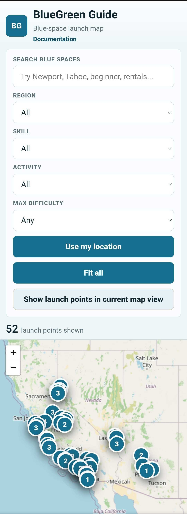

v1.0 Field Guide & User Manual
How to use BlueGreen Guide
A practical guide to navigating the curated launch map, search, filters, cards, details, and verification notes.
Home screen
The home screen has a sidebar for search, filters, result count, and launch cards, plus a map for geographic browsing.

Explore the map
Drag to pan, zoom in and out, select markers, use Fit all to reset, or show launch points in the current map view.

Search
Search by place, region, activity, water type, amenity, tag, or descriptive text.

Filters
Filter by region, skill, activity, and maximum difficulty to narrow the launch collection.

Launch cards
Launch cards summarize skill level, water type, difficulty, popularity, best general time, amenities, tags, and verification status.

Launch details
Open a detail panel to review the fuller description, key planning fields, photo information, source links, and verification notes.

Verification and sources
Details marked unknown or needs verification should be checked through official sources before use.

Mobile use
On mobile, scroll through filters and cards, use the map for context, and open details before checking official sources.


FAQ
Is it nationwide?
Not yet. v1.0 is a curated proof of concept.
Are conditions live?
No. Weather, wind, tide, and water conditions belong to a later planning phase.
Does Beginner mean safe?
No. Conditions vary. Always check current conditions and official sources.